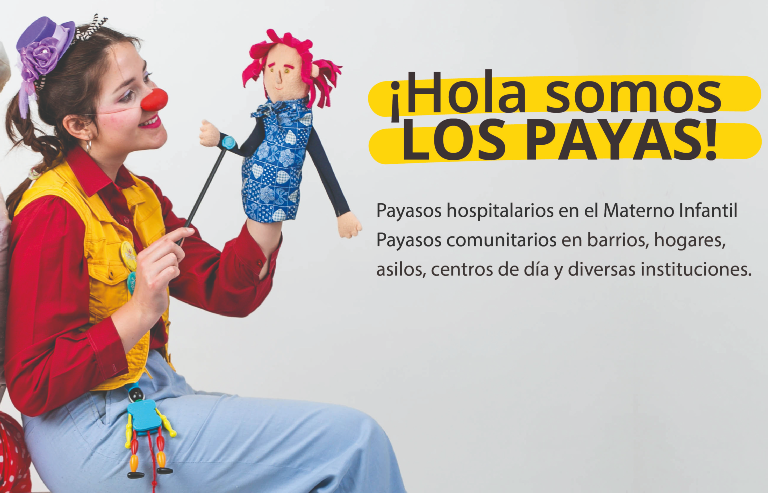

Desarrollo web Ong Los Payas



Detalle del proyecto
Los Payas es una ONG de la ciudad de Mar del Plata que trabaja en el hospital Materno Infantil con paciente menores, la cual cuenta con voluntarios los cuales poseen 2 roles, el rol del payaso y el civil (cuidador del juego del payaso y que se encarga de la seguridad tanto del payaso como el paciente y su familia)
Se desarrolla una web para darle visibilidad al trabajo de la ong y a su vez que puedan recibir donaciones tanto por única vez como que se debiten automáticamente todos los meses. Esto ayuda a que la ONG subsista y ademas pueda crecer